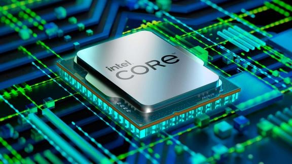
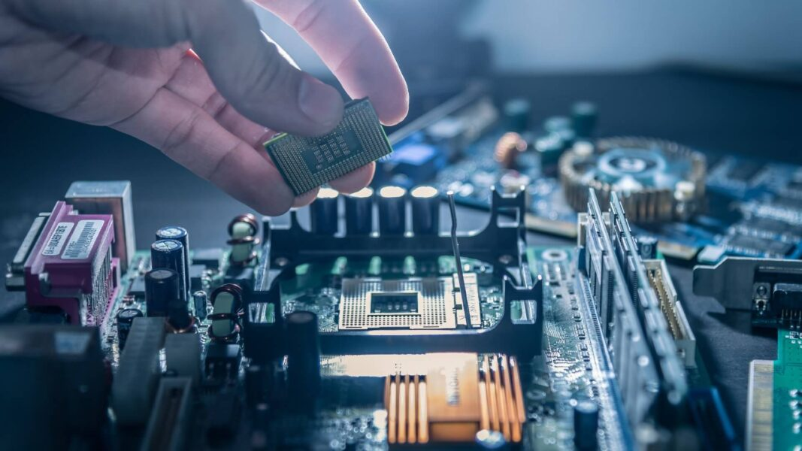
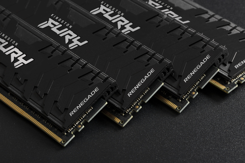
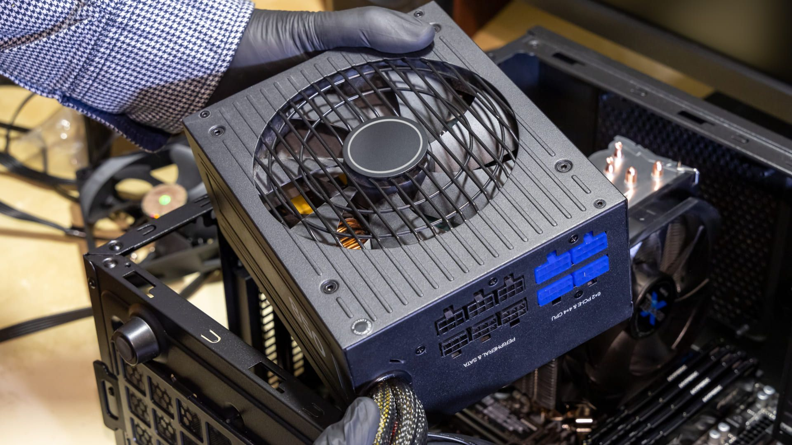
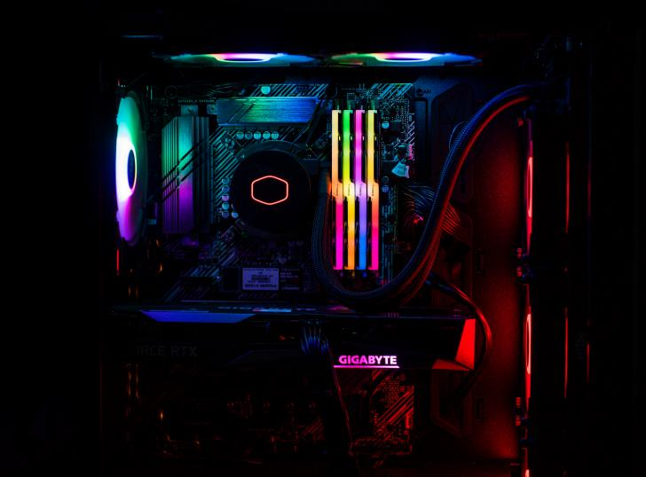

1°- Processador
O processador é uma das principais partes do seu desktop, ele é a unidade de processamento de informaçõese é responsável por realizar os cálculos e as tarefas necessárias para o funcionamento do sistemas.

As Principais Marcas de Processador são: Intel e AMD.
Comprar Processadores
2°- Placa Mãe
A placa mãe é o componente que tem a função de ligar todos os outros, permitindo a comunicação entre elese garantindo um bom funcionamento do computador como um todo.

As Principais Marcas de Placa Mãe são: Asus, MSI, Gigabyte, NZXT e ASRock.
Comprar Placas Mãe
3°- Memória Ram
A memória RAM é a peça responsável pelo armazenamento temporário do computador, guardado os dados porum curto prazo,disponibilizando o conteúdo com velocidade quando requerido.

As Principais Marcas de Memória RAM são: Kingston, Corsair e Gigabyte.
Comprar Memórias Ram
4°- Memória de Armazenamento
A memória de Armazenamento é responsável por guardar os dados de maneira constante, normalmente em formatode SSD (unidade de estado sólido) ou HD (disco rígido).

As Principais Marcas de Memória de Armazenamento são: Kingston, Adata, WD e Samsung.
Comprar Memória de Armazenamento
5°- Placa de Vídeo
A Placa de Vídeo é a peça responsável por gerar a parte visual dos computadores, podendo ser integradas oudedicadas. As placas de vídeo tem um papel crucial no desempenho do computador e na qualidade da imagem.

As Principais Marcas de Placa de Vídeo são: NVidia, AMD e Intel
Comprar Placas de Vídeo
6°- Fonte
A Fonte é o componente responsável por realizar o fornecimento de energia elétrica para todos os componentes docomputador desde a memória Ram até a Placa Mãe

As Principais Marcas de Fonte são: Corsair, Gigabyte e MSI.
Comprar Fontes
7°- Gabinete
O Gabinete é a peça que armazena toda a estrutura do computador, os componentes e os cabos. Os Gabinetes sãodividos em diversas categorias de tamanho, como Mid-Tower e Full-Tower

As Principais Marcas de Gabinete são: NZXT, Pichau, Corsair e Rise Mode.
Comprar Gabinetes